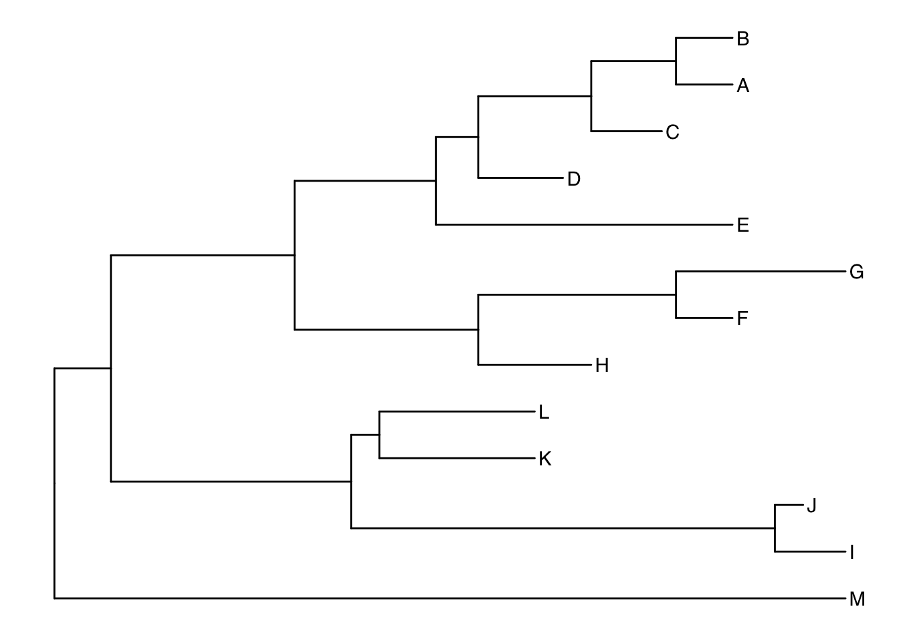
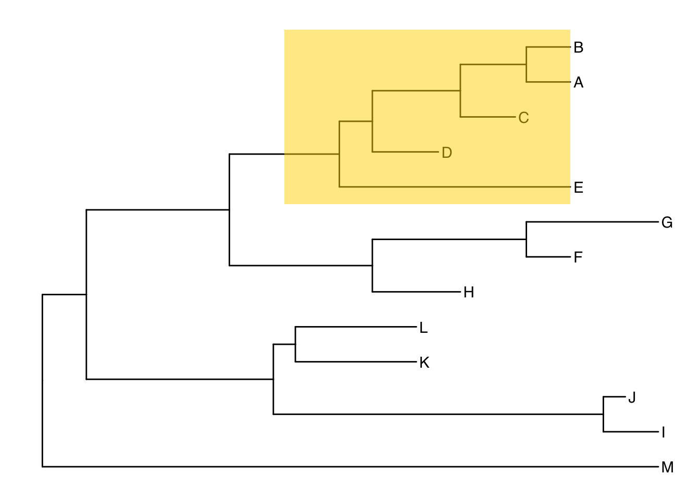
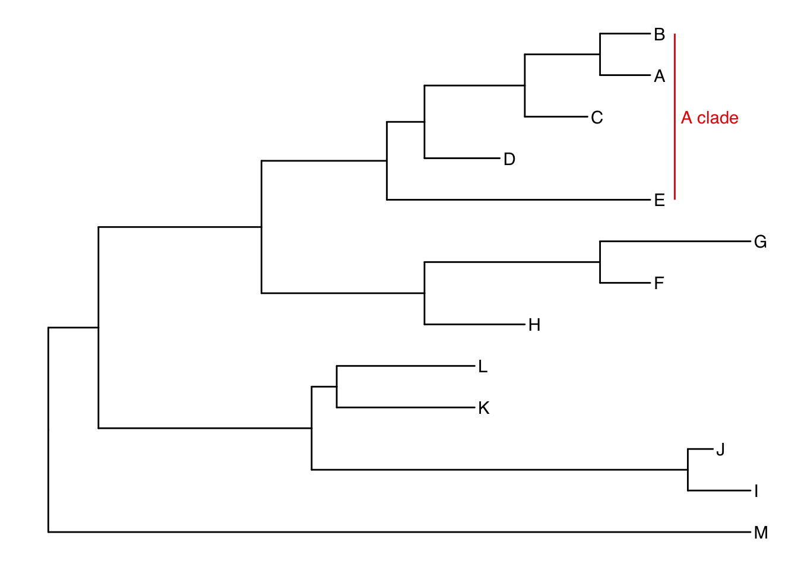

5 Plotting trees in R
5.1 Phylogenies in R
From LIFE223, you know R as a powerful statistical tool. You will also be aware that it is an incredibly flexible tool for plotting data. In this workshop, we will be working with phylogenies in R and manipulating them to produce informative plots.
5.1.1 Packages used
In this section we’ll mostly be using a package called ggtree (Yu et al. 2017, 2018). To install it, we need another package called BiocManager (Morgan 2019).
We will also need to use phylobase (R Hackathon et al. 2019), ggimage (Yu 2019) and it would help to have the tidyverse packages loaded (Wickham 2017) since we’ll be using the syntax of ggplot2. If you get an error message, make sure the packages are installed first.
5.2 Importing your tree
Let’s start by importing a tree. Make sure your working directory is set to wherever you have saved the tree_newick file. If you run this line, you should see an object called “tree” appear in your global environment.
If we take a look at the structure of our tree object using the str function we can see that the tree is stored as an object of class phylo. If you are using a block of trees (more on this subsequent chapters) it will be an object of class multiphylo.
List of 4
$ edge : int [1:24, 1:2] 14 15 16 17 18 19 20 20 19 18 ...
$ edge.length: num [1:24] 4 13 10 3 8 6 4 4 5 6 ...
$ Nnode : int 12
$ tip.label : chr [1:13] "A" "B" "C" "D" ...
- attr(*, "class")= chr "phylo"
- attr(*, "order")= chr "cladewise"We can see a list of 4 elements of the tree object. The first (edge) contains the edges (also known as branches) of the phylogeny and their labels. The next is edge.length which contains the lengths of the branches if present (see chapter 3 for more details). Nnode specifies the number of nodes and finally tip.label contains the labels of the tips. In this case, we just have letters for tip labels.
Things are often clearer when we plot them. We can do this for trees with the plot function in base R. This function is incredibly versatile and you should recognise it from LIFE223. Here we are using very different arguments.

This plot is fine for a quick check to make sure the tree looks as we expected it to. Let’s look at making a more attractive plot with ggtree.
5.3 ggtree
The package ggtree is an extension of ggplot2, a popular plotting package from the tidyverse family of packages. The syntax we’ll be using here is a little different that what you may be used to so don’t get intimidated. ggtree uses the same syntax as ggplot2. This works by creating layers (known as geoms) and plotting them over each other to build up the plot.
We’ll start by using ggtree to plot our tree. Below is the base layer of the plot. There are many other options we can include to customise our tree. Try some out in this R window to see how they effect your plot.
5.3.1 Geoms
Geoms are new layers to plot on or alongside your tree. Now let’s try plotting it whilst adding new layers. These geoms can be combined as you see fit. This gives you a lot of flexibility in how you plot your trees. For example, we can add a geom to include the tip labels for our tree.

And we can add a title
There are many geoms you can use to add more information to your plot. Here are just a few that you may want to investigate.
5.3.2 Labelling clades
As an example of what you might like to do with ggtree, let’s have a look at adding some labels to identify some clades on our tree. To label clades, we need to be able to identify the node of the most recent common ancestor. The function MRCA in the package phylobase (R Hackathon et al. 2019) tells us that the common ancestor of C and E is node 17.
[1] 17We can now use the geom_cladelabel geom to add a simple label for the clade descended from the appropriate node. Take note of the arguments I’ve added to customise the geom. You may want to play around with these options yourself to see how they work.

Pretty good but there are other options. This is a matter of personal preference. You may prefer to overlay a translucent rectangle over your clade of interest.

Use the R window below to experiment with the available geoms in ggtree. Find a combination that suits you and your tree.
5.4 Adding images to trees
As you probably noted in chapter 3, adding images to a plot is an excellent way to annotate your tree. The ggtree package can do this as you can see here.

Figure 5.1: Plot of cephalopod families annotated using ggtree and Phylopic.
This phylogeny is annotated in a number of useful ways. The tip labels describe cephalopod families. The superorders (octopodiformes and decapodiformes) are highlighted by gold and red rectangles as well as a bar across the tips. this demonstrates how multiple geoms can combine to make a plot easy to interpret.
The most interesting thing for our purposes are the silhouettes at the root of each superorder. The octopodiformes have an octopus and the decapodiformes have a squid as example taxa from within the superorder.
5.4.1 Phylopic
The silhouettes used for that plot are from a website called Phylopic. Phylopic provides open source biological silhouettes that are free to use. We’re now going to look at how to get these silhouettes and use them to annotate our trees.
Let’s start with loading an example tree. This one is a primate tree courtesy of Randi Griffin. You’ll notice that I’m loading this tree using a url. This is because I’m loading a file directly from GitHub, a repository for all sorts of code and the host of this site! Randi (and many other coders) make some of the things they produce freely available through GitHub. This can be data, files or code.
primates <- read.nexus("https://raw.githubusercontent.com/rgriff23/Dissertation/master/Chapter_2/data/tree.nex")Let’s plot the new tree first. Here I’m assigning the plot to a named object (p1) in R. This means that instead of immediately printing out the plot, R stores it in the working directory. The reason for doing this will become clear as we go on. It saves us typing out every line of code each time we want to add a new geom!
Let’s use what we already know about ggtree to customise this plot into something more useful. In particular, this plot is quite useful because it tells us the numbers of each node and we will need that later on.
ggtree(primates) +
xlim(0,90) +
geom_tiplab(size=1.5) +
geom_label2(aes(subset=!isTip, label=node), size=2, color="darkred", alpha=0.5)Let’s label the 6 primate superfamilies using the node numbers I have extracted from the previous plot. You can choose whatever colours you prefer here. I’ve also added some useful features to this code. the use of xlim() can be very useful when plotting a tree with some extra space for more details. Here I’ve set the limits of the x dimension (the horizontal) to be between 0 and 100. This gives me space for later annotations.
p2 <- ggtree(primates) +
xlim(0,100) +
geom_tiplab(size=1.5, offset=0.5) +
geom_hilight(node=124, fill="steelblue", alpha=0.5) +
geom_hilight(node=113, fill="darkgreen", alpha=0.5) +
geom_hilight(node=110, fill="gray", alpha=0.5) +
geom_hilight(node=96, fill="pink", alpha=0.5) +
geom_hilight(node=89, fill="beige", alpha=0.5) +
geom_hilight(node=70, fill="yellow", alpha=0.5)
p2
So far so good. Let’s add on bars to label the superfamilies like I did for the cephalopod version. This time, I’ll add the new details to the object p3 to save retyping. Take note of the arguments in each label. You may need to twist these with some trial-and-error to make sure they suit your plot window.
p3 <- p2 +
geom_cladelabel(124, "Galagoidea", offset=15, barsize=2, angle=90,
offset.text=1.5, hjust=0.5, fontsize=3) +
geom_cladelabel(113, "Lemuroidea", offset=15, barsize=2, angle=90,
offset.text=1.5, hjust=0.5, fontsize=3) +
geom_cladelabel(110, "Tarsioidea", offset=15, barsize=2, angle=75,
offset.text=2.5, hjust=0.2, fontsize=2) +
geom_cladelabel(96, "Ceboidea", offset=15, barsize=2, angle=90,
offset.text=1.5, hjust=0.5, fontsize=3) +
geom_cladelabel(89, "Hominoidea", offset=15, barsize=2, angle=90,
offset.text=1.5, hjust=0.5, fontsize=3) +
geom_cladelabel(70, "Cercopithecoidea", offset=15, barsize=2, angle=90,
offset.text=1.5, hjust=0.5, fontsize=3)
p3
There are some helpful details here, such as the fact that the label for Tarsioidea is off at an angle to avoid overlapping with other labels (angle = 75). The extra arguments in these options demonstrate how much control you can exercise over each geom.
Now let’s get to adding images. The way to do this is a little awkward but I think it’s worth the hassle. The first thing we have to do is gather the links for each image we want to use. I’ve chosen to do this by building a small data frame containing the urls to the images on phylopic, the names of the super families I want to label and the nodes I want to plot the images on.
images <- data.frame(node = c(124,113,110,96,89,70),
phylopic = c("http://phylopic.org/assets/images/submissions/
7fb9bea8-e758-4986-afb2-95a2c3bf983d.512.png",
"http://phylopic.org/assets/images/submissions/
bac25f49-97a4-4aec-beb6-f542158ebd23.512.png",
"http://phylopic.org/assets/images/submissions/
f598fb39-facf-43ea-a576-1861304b2fe4.512.png",
"http://phylopic.org/assets/images/submissions/
aceb287d-84cf-46f1-868c-4797c4ac54a8.512.png",
"http://phylopic.org/assets/images/submissions/
0174801d-15a6-4668-bfe0-4c421fbe51e8.512.png",
"http://phylopic.org/assets/images/submissions/
72f2f854-f3cd-4666-887c-35d5c256ab0f.512.png"),
species = c("Galagoidea","Lemuroidea","Tarsioidea",
"Ceboidea","Hominoidea","Cercopithecoidea"))Once we have the urls we need in a nice dataframe, we can pipe them into the geom_nodelab geom and the end product should appear.

As you can probably tell, the images don’t have to be from Phylopic. You can use any images you have the rights to in exactly the same way!
5.5 Further info
This chapter barely scratches the surface of what ggtree is capable of. For much more detail, have a look at Guangchuang Yu’s very own Bookdown covering the topic. You can access the book by clicking here or by running the following code in R once you have ggtree installed.
Bibliography
Morgan, M. (2019) BiocManager: Access the Bioconductor Project Package Repository [online] available from <https://CRAN.R-project.org/package=BiocManager>
R Hackathon et al. (2019) Phylobase: Base Package for Phylogenetic Structures and Comparative Data [online] available from <https://CRAN.R-project.org/package=phylobase>
Wickham, H. (2017) Tidyverse: Easily Install and Load the ’Tidyverse’ [online] available from <https://CRAN.R-project.org/package=tidyverse>
Yu, G. (2019) Ggimage: Use Image in ’Ggplot2’ [online] available from <https://CRAN.R-project.org/package=ggimage>
Yu, G., Lam, T.T.-Y., Zhu, H., and Guan, Y. (2018) ‘Two Methods for Mapping and Visualizing Associated Data on Phylogeny Using Ggtree.’ Molecular Biology and Evolution [online] 35 (2), 3041–3043. available from <https://doi.org/10.1093/molbev/msy194>
Yu, G., Smith, D., Zhu, H., Guan, Y., and Lam, T.T.-Y. (2017) ‘Ggtree: An R Package for Visualization and Annotation of Phylogenetic Trees with Their Covariates and Other Associated Data.’ Methods in Ecology and Evolution [online] 8 (1), 28–36. available from <http://onlinelibrary.wiley.com/doi/10.1111/2041-210X.12628/abstract>